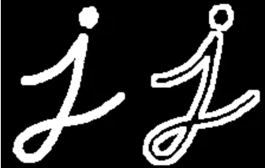

Table of Contents
1. 形态学操作
形态学（morphology）操作主要有[^形态学操作]：
1.1. 定义结构元素
形态学操作选项
# 形态学操作选项 foo=cv2.MORPH_RECT type(foo) >>> int >>>foo 0 # 矩形 cv2.MORPH_RECT >>>0 # 腐蚀 cv2.MORPH_ERODE >>>0 # 膨胀 cv2.MORPH_DILATE >>>1 # 十字交叉形 cv2.MORPH_CROSS >>>1 # 椭圆 cv2.MORPH_ELLIPSE >>>2 # 开运算 cv2.MORPH_OPEN >>>2 # 闭运算 cv2.MORPH_CLOSE >>> 3 # 形态梯度 cv2.MORPH_GRADIENT >>> 4 # 顶帽 cv2.MORPH_TOPHAT >>> 5 # 黑帽 cv2.MORPH_BLACKHAT >>> 6
kernel=cv2.getStructuringElement(shape, ksize[, anchor]) type(kernel) >>> np.array
参数说明
shape: int , 注意不是np.array 的shape，是MorphShapes之一-
[cv2.MORPH_CLOSE,cv2.MORPH_GRADIENT,cv2.MORPH_TOPHAT,cv2.MORPH_BLACKHAT,...]
-
ksize:tuple 结构体shape (3,3) anchor: Anchor position within the element. The default value $(-1, -1)$ means that the
返回值
kernel: np.array ,shape=ksize，- array 数值依据 MorphShapes 确定
1.2. 腐蚀
# 1. 获取kernel ## 1.1 方法1 kernel = np.ones((5,5),np.uint8) ## 1.2 方法2 # kernel=cv2.getStructuringElement(shape, ksize[, anchor]) erosion = cv2.erode(img,kernel,iterations = 1)
返回值
erosion: np.array
1.3. 膨胀
kernel = np.ones((5,5),np.uint8) dilation = cv2.dilate(img,kernel,iterations = 1)
1.4. 开运算
开运算（Opening）：先腐蚀再膨胀
# 开运算 kernel = np.ones((23, 23), np.uint8) iterations = 10 # 执行开运算的次数 opened = cv2.morphologyEx(blurred, cv2.MORPH_OPEN, kernel,iterations)
1.5. 闭运算
闭运算（Closing）： 先膨胀再腐蚀
# 闭运算 kernel = cv2.getStructuringElement(cv2.MORPH_RECT,(5,5)) iterations = 10 # 执行闭操作的次数 close_res = cv2.morphologyEx(img, cv2.MORPH_CLOSE, kernel, iterations)
1.6. 黑帽运算
#设置卷积核 kernel = np.ones((5,5), np.uint8) #图像黑帽运算 result = cv2.morphologyEx(src, cv2.MORPH_BLACKHAT, kernel)
1.7. 顶帽运算
#设置卷积核 kernel = np.ones((5,5), np.uint8) #顶帽运算 result = cv2.morphologyEx(src, cv2.MORPH_TOPHAT, kernel)
1.8. 形态梯度
这个和腐蚀以及膨胀不同，结果看上去像是物体的轮廓。
gradient = cv2.morphologyEx(img,cv2.MORPH_GRADIENT,kernel)
